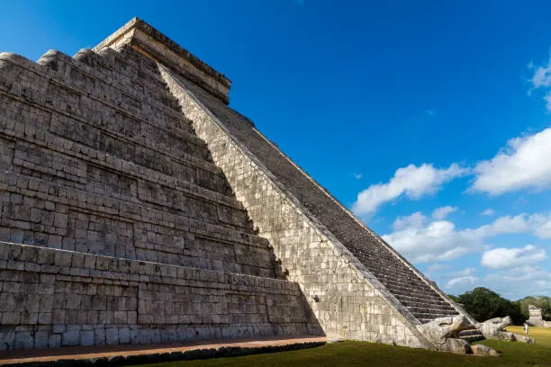
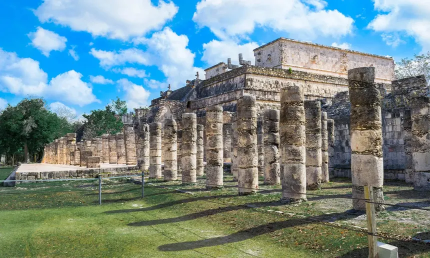
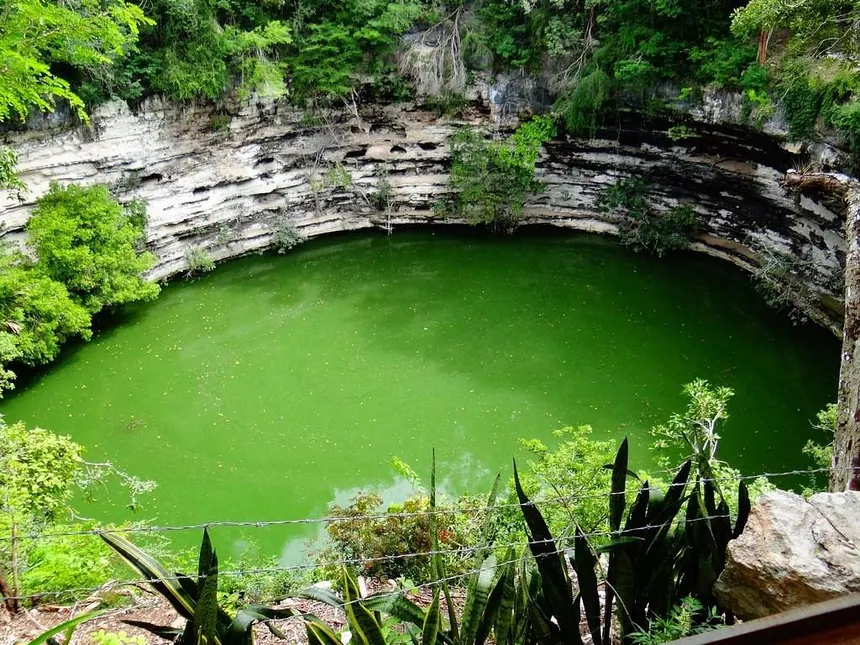
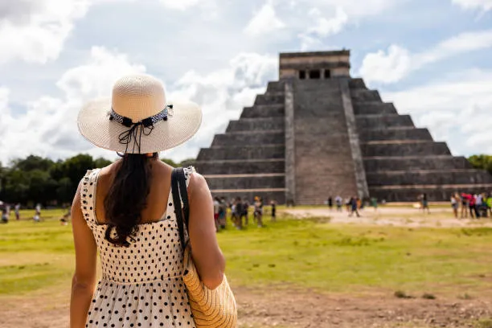

Chichén Itzá
Publicado por Ignacio Bruno en Octubre de 2025

Chichén Itzá fue uno de los principales centros políticos, económicos y religiosos de la civilización maya, ubicado en el norte de la península de Yucatán, México. Su nombre significa “Boca del pozo de los Itzáes”. La ciudad se desarrolló aproximadamente entre los años 600 y 1200 d.C., y fue una de las urbes más poderosas del periodo posclásico temprano. Gracias a su posición estratégica, se convirtió en un punto de intercambio comercial entre el Golfo de México y la región del Caribe, atrayendo a comerciantes, peregrinos y gobernantes de otras ciudades mayas. Fue también un lugar donde se fusionaron las tradiciones religiosas del altiplano con las del área maya, generando una cultura única.
El Castillo: la Pirámide de Kukulkán
El edificio más famoso del sitio es “El Castillo”, también conocido como la pirámide de Kukulkán, el dios serpiente emplumada. Tiene 24 metros de altura y una arquitectura basada en una compleja simbología astronómica. Cada uno de sus cuatro lados posee 91 escalones, que sumados al superior dan 365, representando los días del año solar. La estructura está orientada con precisión a los puntos cardinales y fue construida sobre templos más antiguos, que aún se conservan dentro de la pirámide principal.
Durante los equinoccios de primavera y otoño, un fenómeno de luz y sombra proyecta la forma de una serpiente que parece descender por las escaleras, simbolizando la llegada de Kukulkán a la Tierra. Este evento atrae cada año a miles de turistas y estudiosos del mundo entero. Además, la acústica del templo es sorprendente: al aplaudir frente a sus escaleras, el eco reproduce un sonido similar al canto del quetzal, el ave sagrada para los mayas.
Historia y Cultura
Fundada por los Itzáes, una tribu de origen maya-chontal, Chichén Itzá se convirtió en una de las ciudades más importantes del mundo maya gracias a su ubicación estratégica y su dominio comercial. Su arquitectura muestra una fusión de estilos mayas y toltecas, lo que evidencia contactos culturales e incluso migraciones entre ambos pueblos. Este mestizaje cultural se refleja en los templos, esculturas y relieves que muestran tanto símbolos mayas tradicionales como figuras típicas del arte tolteca, como los chacmooles (figuras reclinadas usadas para sacrificios).
Entre los siglos X y XIII, la ciudad alcanzó su máximo esplendor. Fue un importante centro religioso donde se rendía culto a Kukulkán, a Chaac (el dios de la lluvia) y a otras deidades asociadas con el agua, elemento vital para la agricultura y la vida diaria de los mayas. Su decadencia comenzó hacia el siglo XIII, aunque siguió siendo un lugar de peregrinación hasta la llegada de los españoles. A pesar del paso del tiempo, muchas de sus estructuras se conservan en excelente estado, permitiendo comprender la vida social, política y espiritual de esta gran civilización.
El Cenote Sagrado
Chichén Itzá se construyó cerca de varios cenotes, pozos naturales de agua dulce considerados sagrados. El más famoso es el “Cenote Sagrado”, que servía como sitio de ofrendas y sacrificios. En sus profundidades se han encontrado joyas, cerámicas y restos humanos, lo que confirma su papel ritual. Los sacerdotes mayas arrojaban al cenote objetos de oro, jade y textiles finos como ofrenda a los dioses, especialmente a Chaac, para pedir lluvias y buenas cosechas.
Estudios arqueológicos han revelado que las víctimas humanas eran tanto hombres como mujeres, e incluso niños, lo que demuestra la importancia del agua como símbolo de vida, fertilidad y conexión con el inframundo. El cenote, con un diámetro de 60 metros y una profundidad superior a los 20, es uno de los más impresionantes de la península.
Arquitectura y Astronomía
Los mayas fueron grandes astrónomos y matemáticos, y esto se refleja en la disposición de los edificios de Chichén Itzá, alineados con precisión según los equinoccios, solsticios y posiciones de Venus. La ciudad es una muestra perfecta del conocimiento científico y religioso de esta cultura. Los templos, patios y observatorios estaban dispuestos siguiendo patrones geométricos y astronómicos, demostrando un avanzado dominio del tiempo y del espacio.
El edificio conocido como “El Caracol”, o el Observatorio, tiene una torre circular con ventanas orientadas a los movimientos de los astros. Desde allí, los sacerdotes podían predecir eclipses, cambios de estación y ciclos agrícolas. La arquitectura de Chichén Itzá no solo cumplía funciones estéticas o ceremoniales, sino también prácticas, ligadas a la organización social y religiosa del pueblo maya.

Turismo
Hoy en día, Chichén Itzá es uno de los destinos turísticos más visitados de México. Recibe millones de visitantes cada año que quedan asombrados por la precisión matemática, la belleza de su arquitectura y el misterio que rodea a esta civilización. Es un lugar donde la historia, la ciencia y la espiritualidad se entrelazan, manteniendo viva la grandeza del pueblo maya.
Fue declarada Patrimonio de la Humanidad por la UNESCO en 1988 y una de las Siete Nuevas Maravillas del Mundo Moderno en 2007. Su conservación está a cargo del Instituto Nacional de Antropología e Historia (INAH), y cada año se realizan eventos culturales que buscan mantener viva la herencia maya, como representaciones del equinoccio y festivales tradicionales en los pueblos cercanos.
